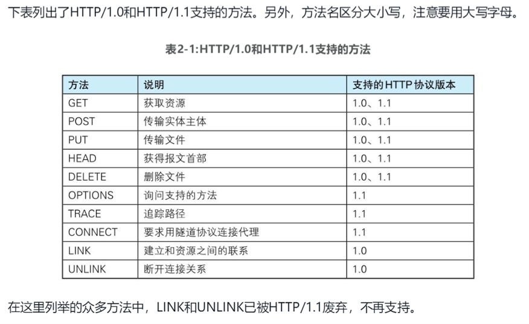
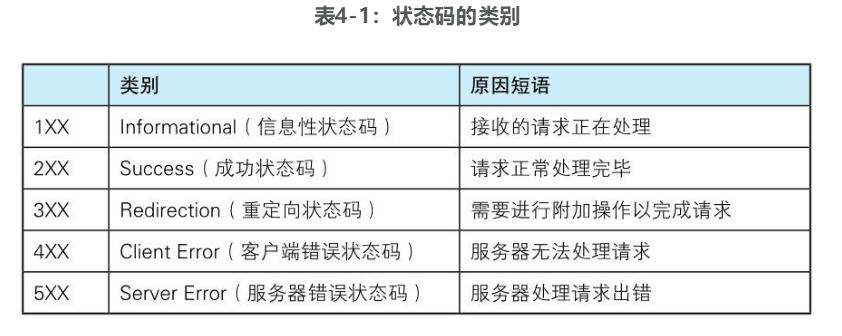
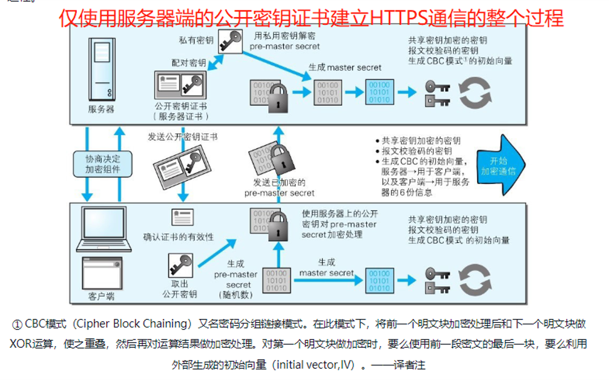

计算机网络-HTTP系列
HTTP协议
请求访问文本或图像等资源的一端称为客户端，而提供资源响应的一端称为服务器端。
超文本传输协议。协议时之规则的约定。
HTTP协议出现主要是为了解决文本传输难题。
HTTP协议用于客户端和服务器端之间的通信。Web是建立在HTTP协议上通信的。
HTTP协议规定，请求从客户端发出，最后服务器端响应请求并返回。
HTTP协议使用URI(统一资源标识符)定位互联网上的资源。

HTTP是无状态协议。HTTP协议自身不对请求和响应之间的通信状态进行保存，即协议对于发送过的请求或响应都不做持久化处理。
持久连接的特点: 只要任意一端没有明确提出断开连接，则保持TCP连接状态。
每当有新的请求发出，就会有对应新的响应产生。
每次请求都会造成无谓的 TCP 连接建立和断开，增加通信量的开销。为解决这个问题，HTTP/1.1 和一部分 HTTP/1.0 使用了持久连接（HTTP keep-alive或HTTP connection reuse）的方法。
更多阅读：HTTP/1.x 的连接管理 - MDN
HTTP报文
用于HTTP协议交互的信息被称为HTTP报文。
HTTP报文本身是由多行（用 CR+LF 作换行符）数据构成的字符串文本。
HTTP报文大致可分为报文首部和报文主体两块。两者由最初出现的空行（ CR+LF ）来划分。通常，并不一定要有报文主体。
报文结构
起始行 + 头部 + 空行 + 实体
请求报文是由请求方法、请求URI、协议版本、可选的请求首部字段和内容实体构成的。

响应报文基本上由协议版本、状态码、用以解释状态码的原因短语、可选的响应首部字段以及实体主体构成。

HTTP首部
结构：首部字段名: 字段值
HTTP首部字段根据实际用途被分为以下4种类型
通用首部字段：请求报文和响应报文两方都会使用的首部。
请求首部字段：从客户端向服务器端发送请求报文时使用的首部。补充了请求的附加内容、客户端信息、响应内容相关优先级等信息。
响应首部字段：从服务器端向客户端返回响应报文时使用的首部。补充了响应的附加内容，也会要求客户端附加额外的内容信息。
实体首部字段：针对请求报文和响应报文的实体部分使用的首部。补充了资源内容更新时间等与实体有关的信息。
在HTTP协议通信交互中使用到的首部字段，不限于RFC2616中定义的47种首部字段。还有Cookie、Set-Cookie和Content-Disposition等在其他RFC中定义的首部字段，它们的使用频率也很高。这些非正式的首部字段统一归纳在RFC4229 HTTP Header Field Registrations中。
HTTP方法
向请求URI指定的资源发送请求报文时，采用称为方法的命令。方法的作用在于，可以指定请求的资源按期望产生某种行为。
GET 与 POST 有什么区别
传参：GET 参数在 url 上传递，POST 参数在 request body 中。（GET 请求也可以携带 request body，主要看服务器是否处理）
参数限制：url 长度有限制，所以 GET 传参有限制，而 POST 没有。
安全性：GET 参数直接暴露在 url 中，不能传递敏感信息。
编码：GET 请求只能进行 url 编码，而 post 支持多种编码方式。
缓存：浏览器会主动缓存 GET 请求，而 POST 不会，除非手动设置。
历史记录：GET请求参数会被完整保留在浏览器历史记录里，而 POST 中的参数不会被保留。
收藏为书签：GET请求支持，POST请求不支持。
对参数的数据类型：GET值接受 ASCII 字符，而 POST 没有限制。
数据包：GET产生一个TCP数据包，POST产生两个TCP数据包。
对于GET方式的请求，浏览器会把http header和data一并发送出去，服务器响应200 OK(返回数据);
而对于POST，浏览器先发送header，服务器响应100 continue，浏览器再发送data，服务器响应200 OK(返回数据)。注意，
尽管POST请求会分两次，但body 是紧随在 header 后面发送的，根本不存在『等待服务器响应』一说。
HTTP状态码
状态码的职责是当客户端向服务器端发送请求时，描述返回的请求结果
常见状态码
200 - 请求成功
301 - 永久重定向
302 - 临时重定向
304 - 协商缓存
400 - 参数错误
401 - 未携带身份验证的凭证，如未携带token
403 - 禁止访问，如token失效或没有权限
404 - 资源找不到
500 - 服务器错误
503 - 服务器没有准备好处理请求。如服务器因维护或重载而停机。
301 和 302 的区别
301 Moved Permanently 请求的资源已永久移动到新位置， 并且将来任何对此资源的引用都应该使用本响应返回的若干个 URI 之一。 如果可能，拥有链接编辑功能的客户端应当自动把请求的地址修改为从服务器反馈回来的地址。 除非额外指定， 否则这个响应也是可缓存的。
302 Found 请求的资源现在临时从不同的URI 响应请求。 由于这样的重定向是临时的，客户端应当继续向原有地址发送以后的请求。 只有在 Cache-Control 或 Expires 中进行了指定的情况下， 这个响应才是可缓存的。
使用场景：301使用域名跳转。302用来做临时跳转，如未登录的用户访问用户中心重定向到登录页面。
HTTP 瓶颈 & 缺点
HTTP 瓶颈
● 一条连接上只可发送一个请求。
● 请求只能从客户端开始。客户端不可以接收除响应以外的指令。
● 请求/响应首部未经压缩就发送。首部信息越多延迟越大。
● 发送冗长的首部。每次互相发送相同的首部造成的浪费较多。
● 可任意选择数据压缩格式。非强制压缩发送。
HTTP 缺点
明文传输
即协议里的报文(主要指的是头部)不使用二进制数据，而是文本形式。
这当然对于调试提供了便利，但同时也让 HTTP 的报文信息暴露给了外界，给攻击者也提供了便利。
WIFI 陷阱就是利用 HTTP 明文传输的缺点，诱导你连上热点，然后疯狂抓你所有的流量，从而拿到你的敏感信息。
不验证通信方的身份
HTTP协议中的请求和响应不会对通信方进行确认。也就是说存在 “服务器是否就是发送请求中 URI 真正指定的主机，返回的响应是否真的返回到实际提出请求的客户端” 等类似问题。
● 无法确定请求发送至目标的Web服务器是否是按真实意图返回响应的那台服务器。有可能是已伪装的Web服务器。
● 无法确定响应返回到的客户端是否是按真实意图接收响应的那个客户端。有可能是已伪装的客户端。
● 无法确定正在通信的对方是否具备访问权限。因为某些 Web 服务器上保存着重要的信息，只想发给特定用户通信的权限。
● 无法判定请求是来自何方、出自谁手。
● 即使是无意义的请求也会照单全收。无法阻止海量请求下的 DoS 攻击（Denial of Service，拒绝服务攻击）。
无法证明报文完整性
所谓完整性是指信息的准确度。若无法证明其完整性，通常也就意味着无法判断信息是否准确。
队头阻塞问题
当 http 开启长连接时，共用一个 TCP 连接，同一时刻只能处理一个请求，那么当前请求耗时过长的情况下，其它的请求只能处于阻塞状态。
无状态所谓的优点和缺点还是要分场景来看的，对于 HTTP 而言，最具争议的地方在于它的无状态。在需要长连接的场景中，需要保存大量的上下文信息，以免传输大量重复的信息，那么这时候无状态就是 HTTP 的缺点了。但与此同时，另外一些应用仅仅只是为了获取一些数据，不需要保存连接上下文信息，无状态反而减少了网络开销，成为了 HTTP 的优点。
HTTP/1.0、HTTP/1.1 区别
HTTP1.0最早在网页中使用是在1996年，只是使用一些较为简单的网页上和网络请求上，而HTTP1.1则在1999年才开始广泛应用于现在的各大浏览器网络请求中，同时HTTP1.1也是当前使用最为广泛的HTTP协议。
缓存处理，在 HTTP1.0 中主要使用 header 里的 If-Modified-Since , Expires 来做为缓存判断的标准， HTTP1.1 则引入了更多的缓存控制策略例如 Entity tag，If-Unmodified-Since , If-Match , If-None-Match 等更多可供选择的缓存头来控制缓存策略。
带宽优化及网络连接的使用，HTTP1.0 中，存在一些浪费带宽的现象，例如客户端只是需要某个对象的一部分，而服务器却将整个对象送过来了，并且不支持断点续传功能，HTTP1.1则在请求头引入了 range 头域，它允许只请求资源的某个部分，即返回码是206（Partial Content），这样就方便了开发者自由的选择以便于充分利用带宽和连接。
错误通知的管理，在 HTTP1.1 中新增了24个错误状态响应码，如409（Conflict）表示请求的资源与资源的当前状态发生冲突；410（Gone）表示服务器上的某个资源被永久性的删除。
Host头处理，在 HTTP1.0 中认为每台服务器都绑定一个唯一的 IP 地址，因此，请求消息中的URL并没有传递主机名。但随着虚拟主机技术的发展，在一台物理服务器上可以存在多个虚拟主机，并且它们共享一个 IP 地址。HTTP1.1 的请求消息和响应消息都应支持Host头域，且请求消息中如果没有Host头域会报告一个错误（400 Bad Request）。
长连接，HTTP 1.1 支持长连接和请求的流水线处理，在一个 TCP 连接上可以传送多个 HTTP 请求和响应，减少了建立和关闭连接的消耗和延迟，在 HTTP1.1 中默认开启Connection： keep-alive，一定程度上弥补了 HTTP1.0 每次请求都要创建连接的缺点。
HTTPS
超文本传输安全协议: HTTP + 加密 + 认证 + 完整性保护
超文本传输安全协议( HTTPS )是一种通过计算机网络进行安全通信的传输协议。HTTPS 并非是应用层的一种新协议。只是HTTP通信接口部分用 SSL 和 TLS 协议代替而已。
HTTPS 开发的主要目的，是提供对网站服务器的身份认证，保护交换数据的隐私与完整性。
SSL （Secure Socket Layer，安全套接字层）是独立于 HTTP 的协议，所以不光是 HTTP 协议，其他运行在应用层的 SMTP 和 Telnet 等协议均可配合 SSL 协议使用。可以说SSL 是当今世界上应用最为广泛的网络安全技术。
TLS 的主要目标是使 SSL 更安全，并使协议的规范更精确和完善。
SSL：（Secure Socket Layer，安全套接字层），位于可靠的面向连接的网络层协议和应用层协议之间的一种协议层。SSL通过互相认证、使用数字签名确保完整性、使用加密确保私密性，以实现客户端和服务器之间的安全通讯。该协议由两层组成：SSL记录协议和SSL握手协议。
TLS：(Transport Layer Security，传输层安全协议)，用于两个应用程序之间提供保密性和数据完整性。该协议由两层组成：TLS记录协议和TLS握手协议。
SSL是Netscape开发的专门用户保护Web通讯的，目前版本为3.0。最新版本的TLS 1.0是IETF(工程任务组)制定的一种新的协议，它建立在SSL 3.0协议规范之上，是SSL 3.0的后续版本。两者差别极小，可以理解为SSL 3.1，它是写入了RFC的。
公开密钥加密技术
SSL 采用一种叫做公开密钥加密的加密处理方式
对称密钥加密
加密和解密同用一个密钥的方式称为共享密钥加密。
以共享密钥方式加密时必须将密钥也发给对方。
公开密钥加密
公开密钥加密使用一对非对称的密钥。一把叫做私有密钥，另一把叫做公开密钥。私有密钥不能让其他任何人知道，而公开密钥则可以随意发布，任何人都可以获得。
使用公开密钥加密方式，发送密文的一方使用对方的公开密钥进行加密处理，对方收到被加密的信息后，再使用自己的私有密钥进行解密。利用这种方式，不需要发送用来解密的私有密钥，也不必担心密钥被攻击者窃听而盗走。
HTTPS 采用混合加密机制
HTTPS 采用共享密钥加密和公开密钥加密两者并用的混合加密机制。若密钥能够实现安全交换，那么有可能会考虑仅使用公开密钥加密来通信。但是公开密钥加密与共享密钥加密相比，其处理速度要慢。所以应充分利用两者各自的优势，将多种方法组合起来用于通信。在交换密钥环节使用公开密钥加密方式，之后的建立通信交换报文阶段则使用共享密钥加密方式。
数字证书认证
服务器把自己的公开密钥登录至数字证书认证机构。
数字证书认证机构用自己的私有密钥向服务器的公开密码署数字签名并颁发公钥证书。
（数字证书认证机构的公开密钥已事先植入到浏览器里了）
客户端拿到服务器的公钥证书后，使用数字证书认证机构的公开密钥，向数字证书认证机构验证公钥证书上的数字签名，以确认服务器的公开密钥的真实性。
使用服务器的公开密钥对报文加密后发送。
服务器用私有密钥对报文解密。
近代的加密方法中加密算法是公开的，而密钥却是保密的。通过这种方式得以保持加密方法的安全性。
加密和解密都会用到密钥。没有密钥就无法对密码解密，反过来说，任何人只要持有密钥就能解密了。如果密钥被攻击者获得，那加密也就失去了意义。
公开密钥加密方式还是存在一些问题的。那就是无法证明公开密钥本身就是货真价实的公开密钥。比如，正准备和某台服务器建立公开密钥加密方式下的通信时，如何证明收到的公开密钥就是原本预想的那台服务器发行的公开密钥。或许在公开密钥传输途中，真正的公开密钥已经被攻击者替换掉了。
为了解决上述问题，可以使用由数字证书认证机构和其相关机关颁发的公开密钥证书。
数据证书认证机构的业务流程
首先，服务器的运营人员向数字证书认证机构提出公开密钥的申请。数字证书认证机构在判明提出申请者的身份之后，会对已申请的公开密钥做数字签名，然后分配这个已签名的公开密钥，并将该公开密钥放入公钥证书后绑定在一起。
服务器会将这份由数字证书认证机构颁发的公钥证书发送给客户端，以进行公开密钥加密方式通信。公钥证书也可叫做数字证书或直接称为证书。
接到证书的客户端可使用数字证书认证机构的公开密钥，对那张证书上的数字签名进行验证，一旦验证通过，客户端便可明确两件事：一，认证服务器的公开密钥的是真实有效的数字证书认证机构。二，服务器的公开密钥是值得信赖的。此处认证机关的公开密钥必须安全地转交给客户端。
使用通信方式时，如何安全转交是一件很困难的事，因此，多数浏览器开发商发布版本时，会事先在内部植入常用认证机关的公开密钥。
HTTPS 的安全通信机制
步骤1： 客户端通过发送 Client Hello 报文开始 SSL 通信。报文中包含客户端支持的 SSL 的指定版本、加密组件列表（所使用的加密算法及密钥长度等）。
步骤2： 服务器可进行 SSL 通信时，会以 Server Hello 报文作为应答。和客户端一样，在报文中包含 SSL 版本以及加密组件。服务器的加密组件内容是从接收到的客户端加密组件内筛选出来的。
步骤3： 之后服务器发送 Certificate 报文。报文中包含公开密钥证书。
步骤4： 最后服务器发送 Server Hello Done 报文通知客户端，最初阶段的 SSL 握手协商部分结束。
步骤5： SSL 第一次握手结束之后，客户端以 Client Key Exchange 报文作为回应。报文中包含通信加密中使用的一种被称为 Pre-master secret 的随机密码串。该报文已用步骤3中的公开密钥进行加密。
步骤6： 接着客户端继续发送 Change Cipher Spec 报文。该报文会提示服务器，在此报文之后的通信会采用 Pre-master secret 密钥加密。
步骤7： 客户端发送 Finished 报文。该报文包含连接至今全部报文的整体校验值。这次握手协商是否能够成功，要以服务器是否能够正确解密该报文作为判定标准。
步骤8： 服务器同样发送 Change Cipher Spec 报文。
步骤9： 服务器同样发送 Finished 报文。
步骤10： 服务器和客户端的 Finished 报文交换完毕之后，SSL 连接就算建立完成。当然，通信会受到 SSL 的保护。从此处开始进行应用层协议的通信，即发送 HTTP 请求。
步骤11： 应用层协议通信，即发送 HTTP 响应。
步骤12： 最后由客户端断开连接。断开连接时，发送 close_notify 报文。上图做了一些省略，这步之后再发送 TCP FIN 报文来关闭与 TCP 的通信。
HTTPS 缺点
SSL慢
SSL 的慢分两种。一种是指通信慢。另一种是指由于大量消耗 CPU 及内存等资源，导致处理速度变慢。
和使用 HTTP 相比，网络负载可能会变慢2到100倍。
除去和TCP连接、发送HTTP请求·响应以外，还必须进行 SSL 通信，因此整体上处理通信量不可避免会增加。另一点是 SSL 必须进行加密处理。在服务器和客户端都需要进行加密和解密的运算处理。因此从结果上讲，比起 HTTP 会更多地消耗服务器和客户端的硬件资源，导致负载增强。
HTTP2.0
特性
- 内容安全，基于 https，通过 http2.0的特性可以避免单纯使用 https 的性能下降。
- 二进制格式，http1.x的解析是基于文本的，http2.0 将所有的传输信息分割为更小的消息和帧，并对他们采用二进制格式编码，基于二进制可以让协议有更多的扩展性，比如引入了帧来传输数据和指令。
- 多路复用，每个请求可以随机的混杂在一起，接收方可以根据请求的id将请求再归属到各自不同的服务端请求里面，另外多路复用也支持了流的优先级，允许客户端告诉服务器哪些内容是更优先级的资源，可以优先传输。
问题
HTTP会在什么时候进行四次挥手
HTTP 的持久连接 Connection: Keep-Alive
连接就不会中断，而是保持连接。当客户端发送另一个请求时，它会使用同一个连接。这一直继续到客户端或服务器端认为会话已经结束，其中一方中断连接。
劣势：
对于现在的广泛普及的宽带连接来说，Keep-Alive也许并不像以前一样有用。web服务器会保持连接若干秒(Apache中默认15秒)，这与提高的性能相比也许会影响性能。
对于单个文件被不断请求的服务(例如图片存放网站)，Keep-Alive可能会极大的影响性能，因为它在文件被请求之后还保持了不必要的连接很长时间。